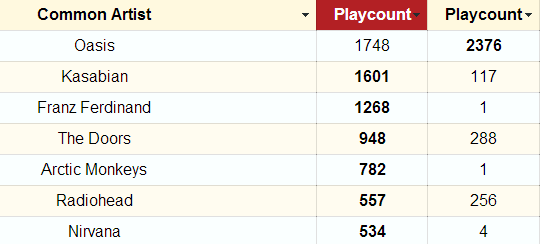

Last.compare
for all time
12 months
6 months
3 months
1 months
7 days
Compare
1
Type above two usernames you want to compare
2

You'll get a detailed list of common artists.
Click on header to sort!